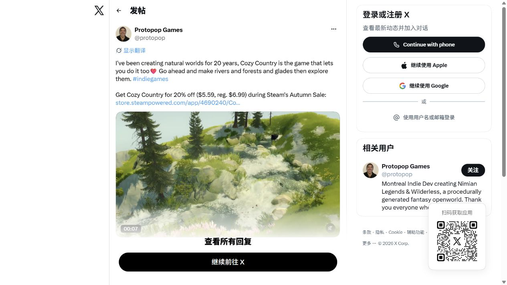
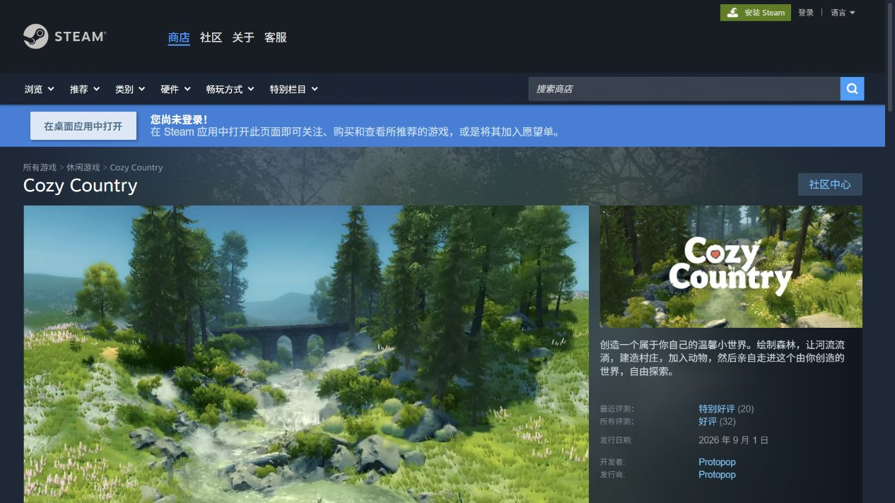

视觉效果与体验分析
观察范围
截图采集于 2026-10-05，分析对象是作者公开演示与商店宣传图，没有进入游戏执行编辑操作。下列“观察”针对画面，“机制”是候选实现手段，“验证”是后续实验，三者不互相替代。
1 · 溪流场景：动态与构图

原帖以溪流为主线：水面从右上向左下延伸，岩石形成落差，树木提供竖向节奏，草花把岸边接回绿色地面。视频播放时可见水面纹理与水花变化；截图只记录一帧。
优势判断：有限的自然元素形成前景、中景和远景；关注点明确，动态集中在水面，周边植被提供相对稳定的背景。
待验证风险：近处白色泡沫与亮部较多，若水花持续高强度，可能影响安静感或遮住河床。实际动态强度、声音、帧率和镜头舒适程度需在运行场景中检查。
2 · 商店画面：作品整体性

商店展示水流、树木、桥梁与远山组成的整体空间，与其创作并探索的产品承诺一致。建筑可作为尺度参照与目的地，自然元素依然主导画面。
待验证问题：宣传图没有展示完整操作流程，无法判断新手需要多少步骤才能达到这一效果。
可复用的视觉原则
| 层面 | 观察或设计目标 | 候选机制／措施 | 后续验证 |
|---|---|---|---|
| 配色 | 草、石、树形成连贯色域 | 统一素材色彩、粗糙度与光照响应 | 同一光照下并排检查素材 |
| 光照 | 亮地面、树荫、远处淡背景建立层次 | 环境光、太阳阴影、雾和适度色彩处理 | 固定机位比较时间预设，保留暗处细节 |
| 地面连接 | 草花连接岩石与地表 | 按坡度、河岸距离、遮罩布置植被 | 检查陡坡、河边、建筑下的悬浮与穿插 |
| 动态 | 水是主要活动来源 | 控制水速、泡沫、水花与植被摆幅 | 固定机位观察，再试减少动态模式 |
| 尺度 | 小物、岩石、树木提供参照 | 以角色视角检查树高和路宽 | 从创作进入探索，核对尺度是否舒适 |
| 声音 | 截图不能验证 | 水、风、鸟鸣分层并可独立调整 | 对比有声与无声，记录偏好 |
这些机制是复现候选，未确认作者实际采用了哪种 Shader、雾或声音实现。
让氛围进入交互
拟议产品先提供少量动作：刷树、刷草花、挖地、放水源、进入探索。操作后出现可理解的局部结果，并支持撤销；初次体验无需调大量参数。
相机应独立设计：创作时看清范围，探索时保持合理速度、转向和高度；进入前保留方向感，退出时回到附近创作位置。是否需要第一和第三人称同时提供，需实际任务验证。
这些是拟议产品建议，不是已确认的原作缺陷。2.6 的镜头速度、植物响应与雾参数调整说明这些细节也在作者维护范围内。官方公告
舒适度与可访问性待测
截图不能确认键盘支持、焦点顺序、界面对比度或完整可访问性。原型需测试工具文字标签、选中状态、不仅依赖颜色的笔刷提示、撤销、静音、减少动态、相机灵敏度与低画质模式。避免用一张漂亮截图代替这些验收。
阶段判断：先保证小场景在编辑与探索视角都连贯，再扩充素材。整体风格、自然反馈与舒适运动需要一起验收。